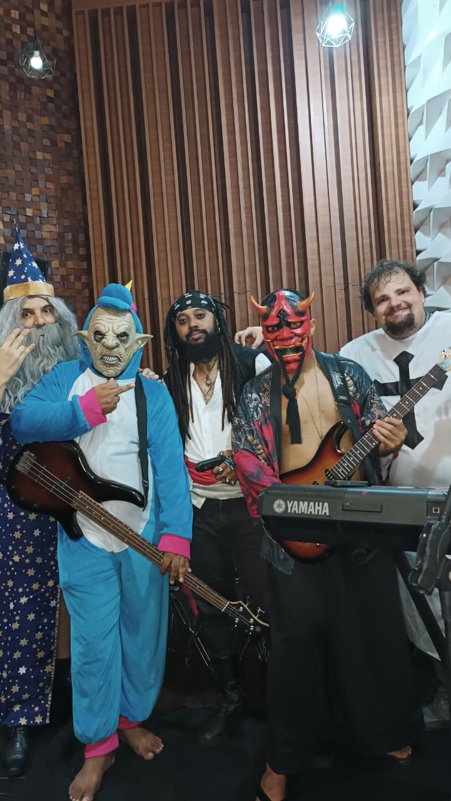

Teclados · Magia
Penetrus — O Mago Tecladista
Penetrus, o mago de barba longa e vestes estreladas, foi o primeiro a sentir a vibração da lendária Pinga Anã. Com seus conhecimentos arcanos e sua maestria no teclado, ele não apenas tocava notas, mas tecia feitiços sonoros, harmonizando as almas e os corações.
Foi Penetrus quem percebeu a necessidade de unir os mais diversos seres para essa grande aventura. Ele lançou um feitiço de convocação musical, uma melodia que viajou pelos ventos e mares, atraindo aqueles com um destino em comum. Sua magia não se limitava aos acordes, mas se estendia à arte de reunir almas, criando a base para a tripulação mais excêntrica e talentosa que já existiu.